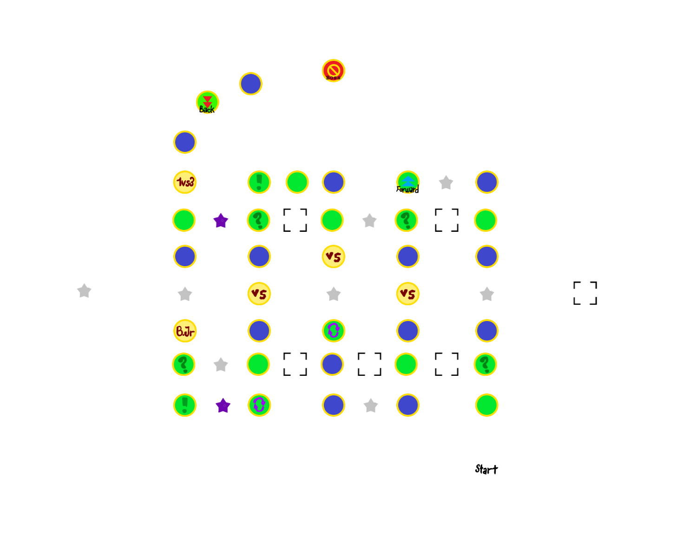
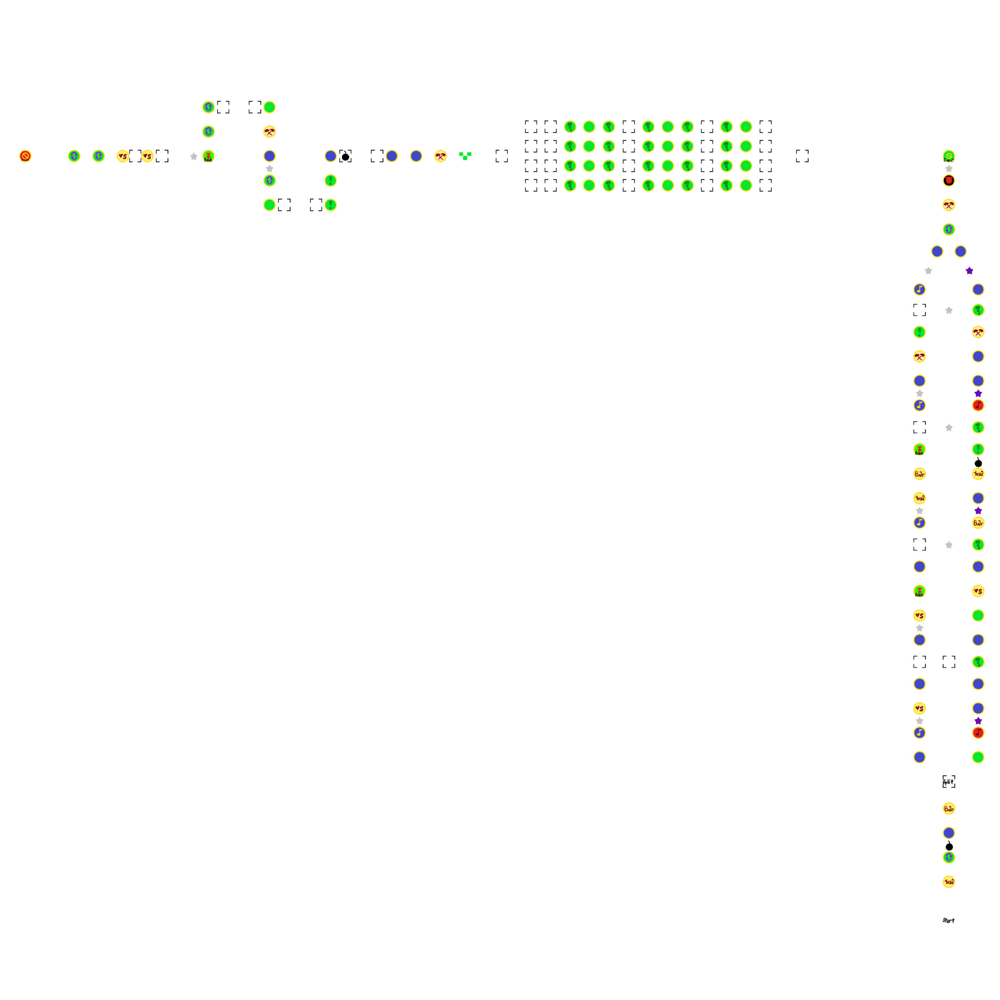

Bob-omb Factory
(Avoid) Conveyors and Platforms
Board Layout


Spaces count (all split paths)
Boss Space: 1
Dice Space: 33
Backward Space: 4
Lucky Space: 4
Unlucky Space: 2
"Almost there" checkpoint: 1
Spin Space: 6
mini star spot: 19
mini ztar spot: 6
Mid-boss space: 1
Battle Space: 5
1v2/3 Space: 4
Bowser Jr Minigame Space: 4
Split path confirmation: 1
Shuffle Space: 9
4v Minigame Space: 8
Happening Space: 28
Green Space: 23
Captain Event Space: 1
Bowser Space: 1
General Tips and strategy
-
First part: All backwards conveyors are bad for the captain in average, and all forwards conveyors will skip ministars, with the exception being the last 2, where the vice versa is better.
Counting from the start to the mid-boss:
- 1st platform: Skips 6 ministars
- 2nd platform: Impossible to be landed on with the happening space on it, as the inital state of the conveyor platform is a green space. Unless a player landed on the 1st platform (which even if they did, it would be impossible to reach this space anyways), it will be a green space when pass-by.
- 3rd platform: Benefits the next player after the captain's turn, with ⅚ chance of getting 3 ministars
- 4th platform: Skips 3 ministars, and make the next player more likely to get 5 ministars
- 5th platform: Skips 5 ministars
- 6th platform: Gain 3 ministars, but also give some chances for opponents to gain up to 8 ministars.
- 7th platform: Only move backs some spaces. Gives the next player another chance at the spin space though
- 8th platform: Gain 3 ministars, and skips 3 miniztars. It is recommended to use 1-3 / 4-6 dice to land on this happening space. (with probability of only ⅓ hitting the 3 miniztars.) Best case, you gain 3 ministars. Worst case scenario, you missed the happening space, gets 3 miniztars, but still gets to land on a spin space, upping the spin star. The other outcome is guarenteeing other player to get the 3 miniztars, causing no harm to you.
- 9th platform: Gain 3 ministars, but skips 5 ministars. Only use special dice to land on this if you want to guarentee you have 3 ministars / next player does not get 5 ministars. (Which is a very rare case in this stage of the game)
- 10th platform: Gets 3 miniztars, and move backwards. This might be the worse conveyor platform to land on.
-
Second area:
-
Probability of going lower path = 49.4%
Probability of going upper path = 50.6%
Overall you will very slightly more likely going the upper path.
- Upper path: Use 4-6 / 1-10 dice if possible to gain more ministars (With the exception of bob-omb, explained below)
- Lower path: Use special dice accordingly to ensure others are getting miniztars but not you.
-
Conveyor platform: Do not use special dice to land on those except last place (explained below) or the last platform.
The last platform can gain you 3 ministars and make the opponent have a high chance of gaining 5 miniztars.
-
Bob-omb on car:
- Ideally you can make sure the bob-omb does not hit you by using special dice.
- Calculate risk management: If gain > loss, then let it explode
- Lower path have an extra bob-omb spot. Aim to get there if you are in last to try to sabotage other players.
Captain Event
Side-by-Side Zone
- Captain choose a slot for every players (the Captain included)
- Players take turn to roll a dice, and move forward with other players
- Ministars may be on the path. Event space shifts them to the left by 1 slot (Go to slot 4 if it was at slot 1)
Tips and strategies
-
Average mini star gained for each slot:
| Slot | Avg Count |
|---|
| 1 | 9.93 |
| 2 | 10.5 |
| 3 | 2.94 |
| 4 | 2.37 |
- Captain's Guide:
- Put the top enemy of yours at the 4th slot.
- Put yourself at the 2nd slot to have the chance of gaining most ministars